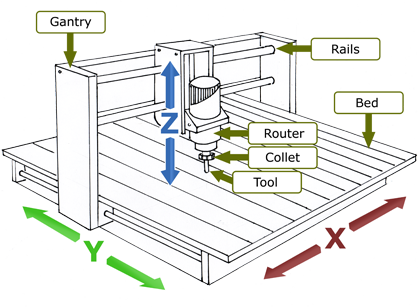

CNC Router and Welding

CNC Routing
CNC routing uses a router in conjuction with a collet and bit or tool to cut various materials using the X, Y and Z axis. The router is attached to the gantry and moves on rails. CNC stands for computer numerically controlled and usually works using G-code a numerical code langauge for machines. We will be using both the ShopBot CNC and X-Carve for both of our projects. You could use the Roland mill as well. The CNC router is useful in cutting various woods, foams, metals, and plastics for applications. You will be using Easel and Vectric software to design (CAD) and cut (CAM) your projects.
CNC Routing Guide
Guide To CNC Bits
Introduction To CNC Machining
Understanding Speeds and Feeds

MIG Welding
Welding is the process of joining to metals together using similar metals. The weld actually melts the metals you are bonding together. In soldering, you heat the metals to be bonded, but you do not melt them. The solder acts as the bond between the two metals and is the only metal melted during the process. We will be using the MIG or gas metal arc welding to weld in class.
MIG Welding Basics
MIG Welding Techniques
Basic Welding Terminology
Assignment- Welding, CNC Router Sign and CNC Cutting Board
1. Welding
- Practice your MIG welding on the testing plates. Lay down several welds to try to make a row of nickels.
- In your group, create a design and weld a project that would be useful in the WIC. The most obvious would be to create a organizer for the cardboard by the laser cutters. This must be a group project and everyone must contribute.
- Take pictures of your welds and talk about the process of welding. Explain what is happening when you weld and the physics behind welding. What is the difference between a good and bad weld?
2. CNC Router
- Create a sign using the CNC router.
- The sign will be made on 3/4 inch MDF and will not exceed 15" x 15".
- Create a sign using the CNC router.
- The instructions can be found using these guides.
- This link shows another example of how to create a personal sign.
- Include the final file on your website and photos of the process.
3. Create an inlay cutting board using the CNC router
- Gather the materials needed using your RedBoard kit
- Follow the instructions found either in chapters 6,7, 8, or 9 in your AIY Projects book or this link.
4. Create a Photobooth That Tweets or Not?
- Gather the following materials: Raspberry Pi, Raspberry Pi Camera Module, buttons, accessories needed
- Follow this guide or this guide for how to make a photo booth.
- Here is the link to the overlays.
- Document your project with a picture of the final project and a tweeted or pictured captured by the photo booth.?
ASSIGNMENT TO DOCUMENT
- 1. Document all of the projects with pictures.
- 2. Explain four products that use AI including two that you currently own
- 3. What is the future of AI and Machine Learning?
- 4. What is an API and why are they so important for both the company and developer?
- 5. What is the major concern with AI and Machine Learning?
Back to index